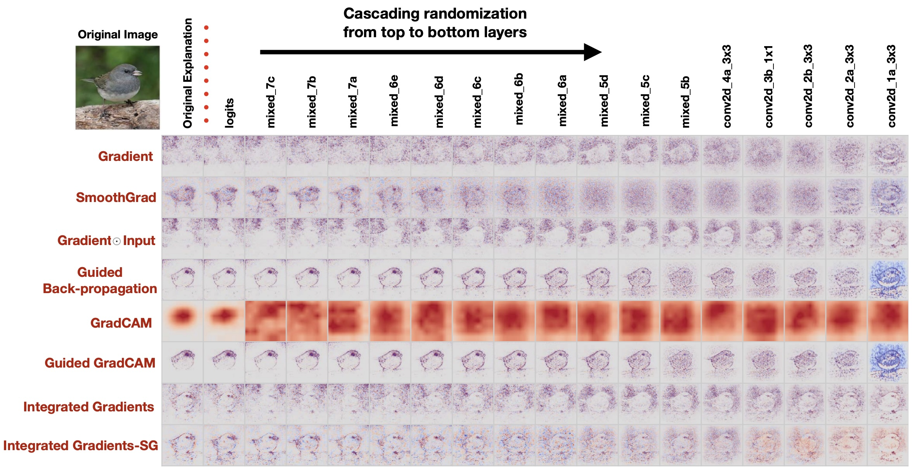
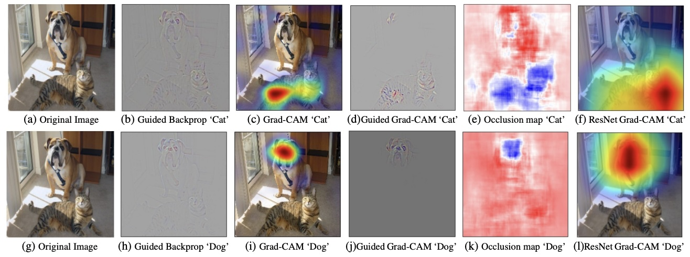

The field of interpretable machine learning underwent an earthquake in 2012 when Krizhevsky et al published the AlexNet neural network that smashed the competitors in the ImageNet object classification challenge.
While deep networks like AlexNet perform extraordinarily well, they have the following two characteristics:
This is a huge contrast from the intrinsically interpretable machine learning approaches from the previous chapter, in which the models were designed to have two characteristics:
In other words, neural networks are not set up to be interpretable at all. To try to understand them we need to do some extra analysis on them after they are trained. This approach is called post-hoc interpretability.
Post-hoc interpretability initially focused on two problems corresponding to the two missing characteristics of interpretability:
This chapter will focus on sensitivity analysis, also known as salience mapping, and we will discuss neuron interpretation in a future chapter.
Soon after the AlexNet work was published, Zeiler and Fergus (2014) published "Visualizing and Understanding Convolutional Networks," which devised several post-hoc interpretation techniques and applied then to AlexNet. The simplest approach was also one of the most usefully interpretable: they directly performed a sensitivity analysis of the outputs of the neural network by occluding parts of the inputs.
Zeiler and Fergus performed their salience analysis by brute-force modification of the inputs to the network: after observing the network's behavior on a particular image \( x \) they defined a set of masked images \( x_{ij} \) that are modifications of the original \( x \) that covered the image with a small gray square at location \( (i, j) \), as illustrated in their (a) input image below.
By scanning the gray square across every location in the image and plotting
changes in the output classification, they could produce heatmaps like (d)
that depict the reduction in output score for the target class. The heatmaps
revealed that in many cases, masking had very little effect in most parts of the
image, but that had huge effects in a few particular locations. In the example
shown here, their visualizations revealed that the classification "Pomeranian" depended
very strongly on the face part of the dog; "Car Wheel" was most sensitive to the big
wheel in an image; and "Afghan Hound" was actually sensitive to the location
of the hound.
Columns (b) and (c) of that same figure also examined the response of individual neurons to the image, which, as you can see, seem uncorrelated to the sensitivity of the output classication for the network. We will return to talk about these when discussing neurons.
Zeiler and Fergus's results were very surprising! Previous to this study, it was far from clear that a "dog" classifier might focus on any small portion of an image, but the salience maps were not only legible, but they were pretty narrowly focused to specific parts of an image. The sparsity of the salience maps is analogous to how a decision tree or a GAM draws a direct connection from inputs to outputs: in this case, the salience map shows you exactly which parts of the input are most influential to the outputs.
Simple Zeiler-style occlusion analysis is very useful and intuitive, but the approach has a few disadvantages:
Alternate masking strategies have been investigated by several researchers: in particular is worth reading Fong, et al (2019), who implemented a blurring appoarch to salience mapping algorithms, and it is worth reading Petsiuk, et al (2018), who implemented a randomized masking search. Both of these papers are able to find sensitive regions that are not just squares. Fong implemented the TorchRay package which is a (slightly older) code resource that implements several salience methods.
To address the speed problem with occlusion-based methods, researchers developed several single-pass algorithms that could just make one pass (or a small number of passes) over the network to produce a salience heatmap, instead of analyzing each patch separately. In his paper, Zeiler refers to his "Deconvnet" approach; this was followed by a number of similar methods: Guided Backrpop by Springenerg (2014), LRP by Binder (2016), DeepLift by Shrikumar (2017), SmoothGrad by Smilkov (2017). These methods all exploit gradients (or quantities similar to gradients) that can be computed over the entire network input in a single backward pass.
The simplest gradient visualization method (maybe too simple to be credited to any specific researcher) is to simply construct a heatmap directly visualizes the gradient. For example, suppose we are interested in the model's prediction of class \( c \) for a given input image \( x \). Then the neural network \( f \) produces output \( y = f(x) \), and in particular the score for class \( c \) of \( y_c = f_c (x) \). Then we can compute the following gradient: \[ \nabla_{x} y_c = \left. \frac{\partial y_c}{\partial x_{ij}} \right|_{i,j} \]
Of the gradient-based visualization methods, the most widespread is probably Integrated Gradients by Sundarajan (2017), which is one of our main readings. Integrated gradients modifies the simple gradient visualization by integrating it over a path of images from a neutral baseline image \( x^0 \) to the target image \( x \): \[ \text{IntegratedGrads}_{ij\rightarrow c}(x) = \ (x_{ij} - x^0_{ij}) \times \int_{\alpha=0}^{1} \frac{\partial f_c(\alpha x + (1 - \alpha) x^0)}{\partial x_ij} \]
Typically the neutral baseline \( x^0 \) is taken as an all-black or all-gray image. Notice that if you sum all the integrated gradients over all pixels, you just get an ordinary line integral, which by the Fundamental Theorem of Calculus for Line Integrals just adds up to the prediction of the network (minus the baseline prediction, which is just a constant) \( f_k(x) - f_k(x^0) \). So the integrated gradient can be thought of as a principled decomposition of the network prediction into contributions from individual pixels, based on decomposing components of the line-integral into per-pixel contributions.
The Integrated Gradients methods produces visualizations like the following
figure from the paper. Notice how they appear to be a big improvement over
visualizations produced by the raw gradient.

By decomposing a neural network into per-pixel contributions, integrated gradients propose a reasonable solution to the "uninterpretable computation" problem of deep networks. IG shows that there is a reasonable way to decompose any deep network prediction into a simple sum of contributions, with one contribution for each input pixel.
There are some very widely-cited salience methods that you should be aware of that take different approaches from the methods discussed above.
The game theory method of Shapley Values is another way to attribute contributions to individual variables, and there is a famous paper SHAP, by Lundberg and Lee (2017) that proposes using Shapley values for salience analysis even in deep neural networks. Shapley values are mostly concerned with the problem of cohorts, i.e., the idea that no individual variable can be tested on its own, but might operate in collaboration with many other variables. So Shapley values devise a fair weighting scheme according to the impact of every possible cohort that a contributor might be in. Since the Shapley formulation involves combinatorial explosions, SHAP works best for low-dimensional models wth just a few variables rather than high-dimensional models, but Lundberg and Lee argue that it can be used in high-dimensional settings also. It is worth reading Sundararajan's discussion of the Shapley approach in his integrated gradients paper.
In a very well-written paper, Ribeiro et al (2016) proposed a method called LIME that produces a salience map based on linear model that is trained to imitate the neural network in the local region near a specific input. Because LIME constructs a surrogate model that it visualizes instead of attempting to directly visualize the underlying neural network, it is a bit more indirect and complex than the other approaches. The Captum library also implements LIME, so you can try it out. We will be looking at linear model probing as a method in more detail in a future chapter.
One famous critique of gradient-based visualizations was made by Adebayo, et al (2018) in the paper "Sanity Checks for Saliency Maps". In that paper, Adebayo shows that if gradient-based methods are used to produce visualizations of networks in which the top layer weights have been randomly scrambled (so that the networks are incapable of producing accurate classifications), the visualizations are nearly indistingishable from maps created from highly-accurate networks. 
The pixel-level fine-grained detail of gradient-based visualizations suggest a kind of "overconfidence" - for example, when very crisp or very speckled patterns appear in a gradient-based salience map, it seems implausble that the dark pixels that sit between bright pixels in the heatmap actually have no importance, because they are probably part of the same overall shape that has been detected.
The Adebayo paper shows one method, "GradCAM" that does seem to degrade immediately after layers are scrambled! (That is a good thing for that method... However, note that the GradCAM visualization is very fuzzy.) Grad-CAM by Selvaraju (2019) is simple, fast, and widely used in practice.
What makes GradCAM special is that, rather than decomposing salience down to pixels, GradCAM decomposes salience down to high-level features, as represented by a layer of internal neurons within the network. Since each interior feature summarizes a region of the image rather than just a pixel, identifying the important features produces a fuzzy salience map. Yet as you can see in the following examples, a fuzzy map is often good enough to understand where the network is looking. 
The GradCAM method uses the following rule to construct a heatmap to visualize the sensitive regions for a prediction of class \( c \). At a chosen convolutional layer, they run through all the feature channels and compute the importance of the \( k \)th channel by computing the average derivative gradient: \[ \alpha_k = \text{averagepool}_{ij} \frac{\partial y_c}{h_{ij}^k} \]
Then they produce a heatmap by summing featuremaps, weighted by \( \alpha_k \): \[ \text{Grad-CAM}_{ij} = \sum_{k} \alpha_k h_{ij}^k \]
Unlike integrated gradients, GradCAM does not have a simple theoretical justification: for example it includes applies an average-pooling rule on the gradient that works well in practice, but that is only justified by the empirical results that "it works". But the Selvajaru paper does include several applications and human studies that suggest that the method works well in practice.
The Captum Library from Facebook Research implements all the salience mapping methods we have discussed here. Try this colab notebook to use captum to try several salience mapping methods on specific images
Salience mapping methods can also be applied to NLP systems like language models. See the Inseq Library for an alternative to Captum that is geared towards this kind of sequence modeling. {footer()}